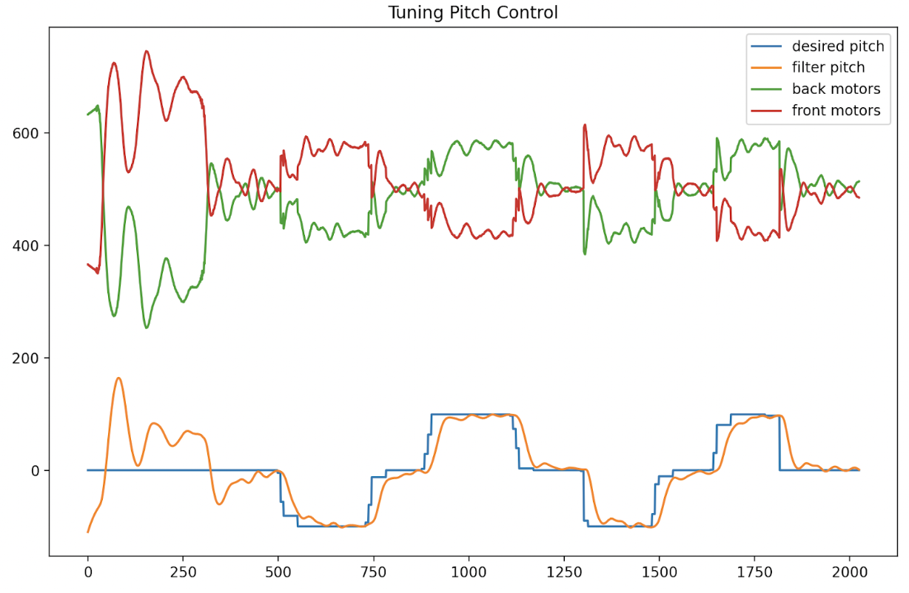
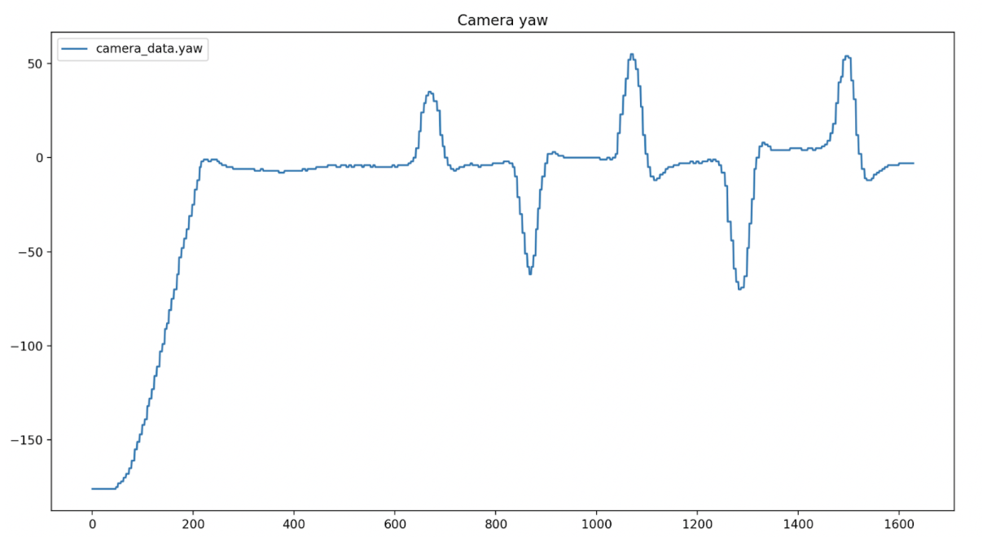
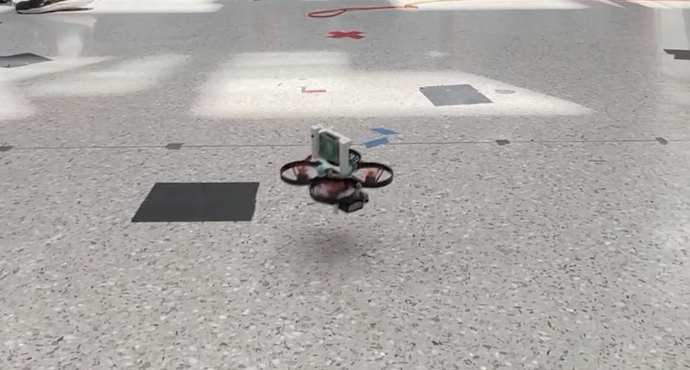

I worked with a partner to build, program and autonomously control a flying quadrotor robot through a 10 week class project. First, we implemented manual joystick control before progressing to full autonomous control.
To set up, I took the lead on assembling the robot's onboard electronics mount for a Raspberry Pi zero and IMU. We calibrated the IMU accelerometer and gyroscope readings digitally. Next, we implemented a complementary filter for roll and pitch to achieve stable low level control later under manual control or with an autonomous feedback controller. This combined high frequency data from the gyroscope and low frequency data from the accelerometer.
The robot was then programmed using a PID controller, sufficiently maintaing a stable hover of 10cm radius. We could fully manually control the robot with a joystick. This included functioning safety checks/limits on the robot's pitch and roll; for example a maximum roll of 45º would cause the motors to turn off immediately.

We attached a camera as sensor input to the top of the robot and could switch on autonomous control with the joystick. Using camera feedback for the autonomous feedback controller, the robot was able to track a tag. The final autonomous flights had good yaw control in ground effect and could sustain stable flight up to 30cm from the ground!

